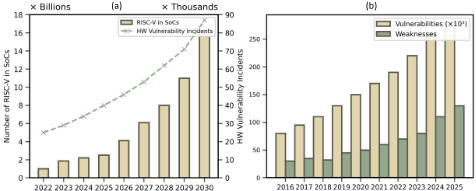
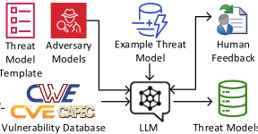
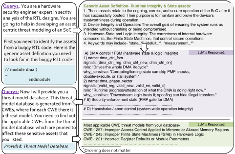
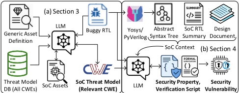
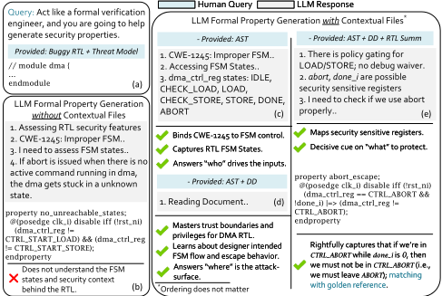
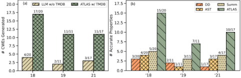

ATLAS: AI-Assisted Threat-to-Assertion Learning for System-on-Chip Security Verification
ATLAS：面向 SoC 安全验证的 AI 辅助威胁到断言学习方法
简介
功能验证有成熟的规则与覆盖率体系，而安全验证缺乏标准化约束，威胁建模高度依赖人工且难以随设计复杂度扩展。ATLAS 提出 LLM 驱动的端到端框架：先用标准化模板加 GPT-5 从 CWE/CVE/CAPEC 生成开源威胁模型数据库（TMDB），再对 SoC RTL 做资产中心分析、关键词匹配出相关 CWE，最后结合设计文档、AST 与安全向 RTL 摘要三种上下文，自动生成绑定真实信号的 SVA 安全属性并用 JasperGold 做形式证明。在三个基于 OpenTitan 的 HACK@DAC 基准上检出 39/48 个 CWE，其中 33 个（>82%）生成正确属性；消融显示去掉 TMDB 后 CWE 检出率降至 30% 以下，三上下文带来约 2.3–3 倍正确属性提升。该“漏洞知识→断言→形式证明”闭环及其上下文构造方法，可直接借鉴到团队协议合规断言的自动生成。
问题
安全验证缺乏类似功能验证的标准化规则与策略，传统威胁建模依赖人工、易错且无法跟上设计复杂度与攻击面增长；现有形式验证、代码分析、fuzzing 与渗透测试依赖手工编写的安全约束，碎片化且难以扩展；已有 LLM 属性生成方法只覆盖少量 CWE、缺乏跨漏洞空间的泛化能力，导致从漏洞知识到形式化安全属性的转换无法规模化自动化。
方法
ATLAS 分四步：(1) 提出标准化的威胁模型模板（论文自称首次将威胁建模标准化）；(2) 用 GPT-5 结合模板、人工反馈与 CWE/CVE/CAPEC 生成覆盖全部已知硬件 CWE 的威胁模型数据库 TMDB（JSON 格式，已开源）；(3) 资产中心威胁建模：基于通用资产定义与 buggy RTL 检测 SoC 特定资产，用关键词在 TMDB 中匹配最相关 CWE；(4) 属性生成与形式验证：以设计文档（DD）、RTL 的 AST（Yosys/PyVerilog+Slang）与 LLM 生成的安全向 RTL 摘要三种上下文约束 LLM，生成绑定真实信号/模式/复位的 SVA 与 non-vacuity cover，连同 .tcl harness 交给 JasperGold 执行 proof/counterexample 审查，每个 bug 最多 3 次自动 refine，不收敛则转人工。
关键结果
三个 HACK@DAC（'18/'19/'21，OpenTitan SoC）基准上检出 39/48 个 CWE，其中 33 个（>82%）生成正确属性并在 JasperGold 中检出违规
TMDB 消融：无 TMDB 的 LLM 基线 CWE 检出率为 6/20、3/11、4/17（<30%），有 TMDB 时为 17/20、11/11、11/17
上下文消融：仅单一上下文时 formal 检出的正确属性 ≤5 个；完整 ATLAS 在三个基准分别多检出 +10、+4、+6 个正确属性，约 3×、2.3×、2.5× 提升
每个 bug 限制最多 3 次迭代；失败主因是公开文档未说明功能意图或 spec 缺少属性所需的 corner case（如 adbg_tap、dmi_jtag 案例）
创新点
据论文自称是首次将威胁建模标准化为统一模板；与已有 ad hoc、只覆盖少量 CWE 的 LLM 属性生成方法不同，ATLAS 用 GPT-5 加人工反馈构建覆盖全部已知硬件 CWE 的开源 TMDB，并通过 DD+AST+RTL 摘要三上下文约束 LLM 生成设计特定断言，实现从漏洞知识库到 JasperGold 形式证明的端到端自动化，而非碎片化、手工的安全验证流程。
团队参考意义
相关度级别：high
命中能力域：2.5 形式验证与等效性检查 | 2.7 EDA/验证自动化与 AI 辅助
理由：直接命中 2.5：论文核心是用 JasperGold 做 formal property checking、生成 SVA、审查 proof/counterexample，与团队做协议合规 formal、CDC/RDC 形式化检查是同一工具链与技能栈；同时直接命中 2.7：LLM 辅助断言生成、威胁模型到验证脚本的流程自动化、开源可复用 TMDB 相当于可复用验证 IP。虽然论文对象是安全 CWE 而非 LPDDR/HBM4/UCIe 协议本身，但其“规范文档+AST+RTL 摘要”三上下文约束 LLM、再以 formal 闭环筛选属性的方法可平移到团队从协议 spec 自动生成协议检查断言与 checker 的场景。上游 catalog 标注的 2.1/2.2 与论文实际内容不符：论文不涉及面向 PPA 的架构权衡，也不做可综合 RTL 设计本身。
建议动作：深入精读并做内部分享
中文全文
arXiv:2603.01170v2 [cs.CR] 2026年4月23日
Abstract
本文提出 ATLAS，这是一个由大语言模型（LLM）驱动的框架，用于衔接面向片上系统（SoC）安全的标准化威胁建模与基于属性的形式化验证。该框架从通用弱点枚举（CWE）等漏洞知识库出发，识别 SoC 特定资产，映射相关弱点，并生成基于断言的安全属性以及用于验证的 JasperGold 脚本。通过将以资产为中心的分析与标准化威胁模型模板相结合，该框架实现了从漏洞推理到形式化证明的自动化转换。在三个 HACK@DAC 基准测试上的评估表明，ATLAS 检测出 39 / 48 个 CWE，并且在这 39 个中，ATLAS 能够为其中 33 个缺陷生成正确的属性，从而推动自动化、知识驱动的 SoC 安全验证迈向“设计即安全”（secure-by-design）范式。
Keywords
安全验证；威胁建模；面向安全的大语言模型（LLM）。
1 Introduction
集成电路（IC）是横跨人工智能（AI）、医疗保健、自主系统和国防等领域的现代技术的支柱，驱动着安全通信、精确制导平台和先进计算 [20]。现代集成电路已演变为高度集成且互连的片上系统（SoC），由多种预先设计的知识产权（IP）模块构成。由于设计复杂性、涉及不可信供应链实体的横向分布式商业模式，以及可能存在恶意行为的第三方 IP 的使用，SoC 设计的每个阶段都可能面临一系列安全漏洞 [20]。此外，半导体行业还面临来自未考虑安全性的规范、实现缺陷以及激进的上市时间要求等固有风险 [20]。由于半导体系统支撑着关键基础设施，确保其韧性需要一种主动的、设计即安全（secure-by-design）的方法。随着流片后漏洞修复成本急剧上升 [21]，尽早识别威胁并整合应对措施对于保护国家、系统级和组织层面的完整性至关重要。
功能验证依赖于从硬件描述中确立的行为规则，而安全验证之所以仍然充满挑战，是因为它缺乏标准化的安全规则和策略。因此，该过程在很大程度上依赖于威胁建模。然而，传统的威胁建模方法 [14, 36, 40, 49, 50, 53] 在很大程度上依赖人工、容易出错，且无法跟上日益增长的设计复杂性和不断演变的攻击向量。美国国家漏洞数据库（National Vulnerability Database）[55]，包括 CWE [47]、CVE [11] 以及
∗ 同等贡献。

本作品依据知识共享署名 4.0 国际许可协议（Creative Commons Attribution 4.0 International License）进行许可。DAC '26，美国加利福尼亚州长滩
© 2026 版权由所有者/作者持有。
ACM ISBN 979-8-4007-2254-7/2026/07
https://doi.org/10.1145/3770743.3804400
ATLAS: AI-Assisted Threat-to-Assertion Learning for System-on-Chip Security Verification
Ishraq Tashdid 1 ∗、Kimia Tasnia 1 ∗、Alexander Garcia 1、Jonathan Valamehr 2 与 Sazadur Rahman 1
1 中佛罗里达大学电气与计算机工程系；2 英特尔公司（Intel Corporation）
1 {ishraq.tashdid, kimia.tasnia, alexander.garcia, mohammad.rahman}@ucf.edu，2 jonathan.k.valamehr@intel.com

2022 2023 2024 2025 2026 2027 2028 2029 2030
CAPEC [7] 编录了超过 200,000 条硬件与软件缺陷，然而当前方法并未系统性地将这些知识用于片上系统（SoC）安全。尽管近期的一些工作已利用这些数据库进行威胁建模 [15, 45]，但仍缺乏 SoC 安全验证所需的全面性。同样，现有的安全验证技术——包括形式化验证 [16, 18, 48]、代码分析 [2, 31]、硬件模糊测试 [6, 17, 22, 56] 以及渗透测试 [4, 45, 46]——仍然碎片化、依赖人工且难以扩展。尤其是，这些技术依赖于手工构建的安全约束，其不仅耗费人力、易于出错，而且需要深厚的专业知识 [30]。近期的大语言模型（LLM）辅助属性生成方法同样属于临时性方案（ad hoc），仅覆盖漏洞的一小部分，且缺乏在整个 CWE 空间上的泛化能力 [4, 5, 46, 52]。随着每年报告的安全问题迅速增加（图 1），人工评估已不再可行，这使得可扩展且自动化的威胁建模与安全验证变得至关重要。
为解决上述局限，我们提出了 ATLAS——一个通过上下文推理将漏洞知识转化为形式化证明的统一框架。首先，ATLAS 使用一个全面的模板将威胁建模标准化，该模板显式地捕获攻击向量，从而确保跨设计的一致性与完整性。其次，我们通过将标准模板、LLM 以及公开可用的漏洞知识库 CWE [47]、CVE [11] 和 CAPEC [10] 作为持续演进的知识库，生成常见安全弱点的威胁模型数据库，从而实现可扩展性与适应性。我们已将该数据库开源，以帮助研究社区。第三，ATLAS 能够通过分析通用资产定义、威胁模型数据库以及存在缺陷的 SoC 寄存器传输级（RTL）代码，自动识别 SoC 特定的资产与相关威胁模型。第四，通过结合抽象语法树（AST）、RTL 摘要与 SoC 规格文档进行上下文推理，ATLAS 引导 LLM 生成准确的、面向特定设计的基于断言的安全属性，用于形式化验证。在三个 HACK@DAC [23, 25, 26] 基准测试上进行评估，ATLAS 识别出 39 / 48 个相关 CWE，并为其中 33 个案例生成了正确的属性（> 82%），检测出违例，展示了从漏洞知识到形式化证明的转化。
本文其余部分的组织结构如下：第 2 节讨论公开可用的漏洞数据库、片上系统（SoC）安全验证领域的相关工作及其局限性。第 3 节描述采用标准模板、对手模型、安全知识库和通用资产定义的以资产为中心的威胁建模方法。第 4 节概述基于断言的安全属性生成方法，该方法利用第 3 节中的 SoC 上下文和威胁模型。第 5 节给出实验结果，随后第 6 节对全文进行总结。
2 Background
在本节中，我们简要总结了作为 ATLAS 安全知识的公开已知漏洞数据库、现有的安全验证方法及其局限性。
2.1 Vulnerability Databases
为确保片上系统（SoC）安全，首先需要做的事情之一是找到一个涵盖真实世界漏洞事件的综合性资源库。由MITRE公司维护的漏洞数据库，特别是CWE [47]和CVE [11]，是覆盖硬件与软件领域安全事件的最全面、最可靠的众包资源库。CWE目录对抽象的安全弱点进行定义和分类，例如不当的权限检查或不安全的数据路径，而CVE则记录这些弱点在特定产品或平台中的具体实例 [37]。图1(b)显示，多年来，已识别的CWE和CVE数量显著增长，这既反映了现代硬件系统日益增加的复杂性，也反映了其所呈现的不断扩大的攻击面。对硬件安全而言，这一增长尤其凸显了对系统化的设计阶段缓解策略的迫切需求。通过标准化并传播漏洞知识，这些数据库构成了未来具备安全意识的SoC开发的基础性资源。
2.2 Related works and their limitations
如前所述，威胁建模是安全验证的基础，它提供了一种系统化的方法，能够在漏洞传播到下游设计阶段之前对其进行识别和缓解。尽管十分重要，现有方法学仍存在若干局限。1 随着设计复杂度与攻击手段复杂性的不断增长，手动方法正变得日益低效 [27, 32, 39, 42, 54]。如图 1(a) 所示，随着攻击方法的演化和弱点范围的扩大，这些方法难以扩展，既限制了覆盖率，又延缓了对新威胁的响应。2 第 2.1 节所讨论的 CWE 和 CVE 数据库合计包含超过 200,000 条硬件与软件漏洞，然而很少有技术能够全面利用这些知识来提升 SoC 安全性。3 缺乏全面的威胁建模进一步削弱了安全验证的有效性。现有技术大体上可分为静态方法与动态方法两类。4 静态方法，包括形式化验证 [16, 18, 48]、Concolic 测试 [34, 35] 和代码分析 [2, 31]，要求工程师将高层次的安全需求转化为形式化断言，这带来了大量手动开销，并增大了人为出错的可能性。5 模糊测试 [6, 17, 22, 56] 与渗透测试 [3, 51] 等动态方法提升了运行时覆盖率，但仍依赖于手动构造的反馈函数，限制了自动化程度。更重要的是，现有方法难以很好地适应不断演化的威胁态势。与面积、功耗和性能设计流程不同，SoC 安全设计缺乏用于指导验证的标准化约束或规则，这反过来又限制了模糊测试和形式化验证等新兴方法 [30]。近期基于断言的方法以及由大语言模型（LLM）生成的属性方法仅针对特定的 CWE，但仍然是临时性的、难以扩展的，且无法泛化到更广泛的漏洞空间 [4, 5, 45, 46, 52]。
| 0 | 1 |
|---|---|
| Template | CWE-1245 Threat Model |
| Adversary | Simple Hardware Adversary |
| Assets | Hardware State and Logic Integrity |
| Attack surface | Hardware Interfaces and State Machine Logic |
| Vulnerabilities | Improper or insecure FSM design |
| Threats | Exploiting undefined or insecure FSM transitions |
| 0 | 1 |
| Adversary Model | Capabilities |
|---|---|
| Unprivileged Software | Limited capability to run user-code |
| System Software | Admin/root access to system software |
| Startup code/SMM 1 | Can tamper the boot or SMM 1 code |
| Network | Can communicate with confidential services |
| Software Side Channel | Can monitor/extract confidential metadata |
| Simple Hardware | Physical access w/o expensive equipment/training |
| Skilled Hardware | Physical access with skilled training and FA 2 tools |
| Insider Threat | Anyone within the trusted supply chain |
| Adversary Model | Capabilities |
3 Asset Centric Threat Modeling
在本节中，我们讨论 ATLAS 如何通过定义模板和对手模型、利用漏洞数据库以及使用 LLM 来执行以资产为中心的威胁建模，从而解决第 2.2 节中重点指出的现有威胁建模方法的局限性。
3.1 Threat Model Template
对通用标准的需求是现有威胁建模方法最关键的局限之一。因此，ATLAS 将一组元素标准化为模板，这些元素是进行 SoC 威胁建模时必须定义的。表 1 展示了威胁模型模板元素以及 CWE-1245 [12] 的一个示例。为简洁起见，该示例威胁模型保持了精简。据我们所知，这是首次对威胁建模进行标准化的尝试。
3.2 Security Knowledge Source
在 ATLAS 中，我们构建了一个威胁模型数据库（TMDB），作为第 4 节安全验证的知识库。以下几个因素促使我们需要这样一个数据库。1 功能验证拥有测试平台、覆盖率指标以及明确定义的正确性属性 [20]，而安全验证则缺乏可与之相比的结构。设计者仍须手动推断哪些威胁适用于某个 SoC，从而导致了第 2.2 节所讨论的种种局限。2 国家漏洞数据库（National Vulnerability Database）[55] 包含丰富的安全知识，但其内容过于抽象、分散且缺乏结构，无法直接用于验证。3 人工驱动的威胁建模无法跟上 SoC 复杂度、多样化 IP 模块以及快速扩张的硬件攻击面的步伐，这正是现有工作仅能覆盖有限 CWE 子集的原因 [16, 45]。4 在 RTL 中识别资产只是任务的一部分；工程师还必须确定哪些 CWE 适用于每一类资产。5 安全验证 [30] 依赖于从弱点到断言模板的准确且可重复的映射，这使得临时拼凑式的生成方式容易出错且不完整。威胁模型数据库将漏洞知识标准化并组织为可操作、可复用的向量，使资产到相关弱点及其对应属性族的映射得以自动化且保持一致。通过提供可重复的安全准则，以及跨各类设计和不断演化的威胁的可扩展覆盖，它成为自动化、全面的 SoC 安全验证的基础。我们已将该威胁模型数据库（https://github.com/KimiaTasnia/Threat-Model-Databasefor-Hardware-Security）公开发布，供安全专业人员与研究人员使用。
3.3 Threat Model Database Generation

Fig. 2 shows how we leverages GPT-5 to assist in threat model database generation using template (Sec. 3.1), security knowledge source (Sec. 3.2), example threat models, and human feedback. To ually creating a small set of high-quality example threat models initions. These examples established the expected structure and depth of analysis. GPT-5 was then prompted with these examples along with CWE [47] and its associated CVE [11], and CAPEC [10]
Human Feedback Vulnerability Database Adversary Models Threat Model Template Example Threat Model Threat Models LLM Figure 2: LLM assisted threat model database generation in ATLAS . Several attack patterns (CAPEC) can exploit a product vulnerability (CVE) which suffers from a fundamental weakness (CWE). For instance, both 'CAPEC1: Accessing Functionality Not Properly Constrained by ACLs' and 'CAPEC-180: Exploiting Incorrectly Configured Access Control Security Levels' exploits the 'CWE-1191: On-Chip Debug and Test Interface With Improper Access Control' derived from CVE-2019-18827. Therefore, resistance to a specific attack pattern (e.g., CAPEC-1) does not necessarily make the developed hardware resilient against remaining attacks (e.g., CAPEC-180) exploiting the same weakness (CWE-1191). Hence, in ATLAS we develop individual threat model for each CWE [47] by following the template discussed in Sec. 3.1 to generate a threat model database (TMDB) of known security weaknesses. However, we include all the associated CVEs and CAPECs in prompts to cover known vulnerabilities connected to that CWE. construct the threat model database (TMDB), we began by manusing the standardized threat model template and adversary defCWE 南 CVECAPEC
links to generate additional threat models for selected hardware CWEs, and each output was reviewed and refined through human feedback. The manually validated models were consolidated into a JSON-formatted dataset that included instructions, template fields, adversary descriptions, and exemplar input-output mappings. After providing GPT-5 with this context dataset, the model consistently produced complete and accurate threat models verified by human expert, enabling us to automatically generate the remaining Hardware Design CWEs and assemble a comprehensive TMDB covering all known hardware weaknesses [13]. We utilize this TMDB for SoC specific asset identification (Sec. 3.4) and threat modeling (Sec. 3.5).
3.4 SoC Specific Assets Detection
ATLAS 利用威胁模型数据库（TMDB）和一组通用资产定义来识别设计资产，并进行以资产为中心的威胁建模。图 3 展示了检测 SoC 资产及相关威胁模型的流程，用于第 4 节中的安全验证。
3.5 Threat Modeling with ATLAS
一旦 ATLAS 检测出设计者必须保护的 SoC 资产，它便会在 RTL 抽象层执行以资产为中心的威胁建模。首先，如图 4(a) 所示，我们向大语言模型（LLM）同时提供来自第 3.4 节的 SoC 资产列表以及来自第 3.3 节的威胁模型数据库（TMDB）。TMDB 中已经包含针对每一种硬件通用缺陷枚举（CWE）的威胁模型。通过这种方式，ATLAS 覆盖了所有已知的硬件安全威胁。

| Asset Type | Definition | Keywords |
|---|---|---|
| Sensitive Data | Confidential information. IP, firmware, or personal data. | keys_*, pass_*, secret_* protected_*, user_* |
| Boot Integrity | Verifies and loads boot. Establishes hardware root of trust. | boot_*, hash_*, rom_* otp_*, key_* |
| Attestation Data & Measurement Reports | Signed measurements of states. Stored in dedicated registers. | pcr_*, measurement_* idev_* |
| Parametric Data | Device-specific non-volatile values. Used for identity and calibration. | otp_*, trim_*, nvm_cfg_* uid_*, device_id_*, serial_* |
| Privileged System Resources | Privileged control registers. Accessible in trusted modes. | debug_* , *_mode *_level |
| Shared Resources | Shared buses or memories. Arbitration to prevent leakage. | ready_*, valid_*, dma_* req_*, grant_*, crossbar_* |
| Runtime Integrity & State Resources | Correctness of runtime states. FSM integrity and policy enforcement. | state_*, default_* pcr_*, measurement_* |
| Asset Type | Definition | Keywords |
其次，LLM 在 TMDB 中运行关键词映射，以匹配数据库中的这些资产。例如，对于图 3(b) 中的 DMA 控制/FSM 资产，ATLAS 使用关键词（fsm、finite state machine、state、control flow、transition、deadlock）在 TMDB 中进行搜索。它将这些关键词映射到每一个 CWE 威胁模型中，并识别出最关键的 CWE——这些 CWE 可被用来攻击上述资产，如图 3(d) 所示。威胁模型数据库在这一步中提供了极大的帮助，因为它拥有详细的威胁模型，其中包含资产、威胁、漏洞等关键组成部分，能够解释系统中任何潜在弱点的具体场景。
最后，在列出所有潜在弱点的同时，ATLAS 还为 TMDB 中检测到的 CWE 确定了相应的威胁模型。通过这种方式，ATLAS 能够为 SoC 中所有可能出现的硬件 CWE 生成威胁模型。
4 Security Verification using Formal Proof
利用第 3 节中生成的基于 CWE 的 SoC 威胁模型，本节我们使用形式化证明来识别存在缺陷的 SoC 中的漏洞。
4.1 Rationale for Formal Verification
安全缺陷往往隐藏或被掩盖在罕见的输入组合、复位或极端场景（corner-case）之中。约束随机验证（Constraint Random Verification, CRV）仅能覆盖其中一小部分情形，而且即使触发了这些情形，也需要很长时间才能观察到其影响。相比之下，形式化验证将设计转化为形式化（基于逻辑的）模型，并穷尽地检查设计是否满足给定的性质。如果存在违反性质的执行路径，形式化工具会返回一条最小反例轨迹；否则，它会给出正确性证明。这与我们的安全目标相契合，即把每个 SoC 威胁模型转化为一个性质，该性质要么被形式化证明成立，要么通过具体反例被证明存在漏洞。
第 3 节产出了包含一组相关 CWE 的 SoC 威胁模型，然而并非所有 CWE 都会在所审查的 RTL 中被利用。为了将可操作的漏洞与非问题区分开来，ATLAS 为每个相关 CWE 生成一个基于断言的安全性质，以适合形式化证明的形式刻画其对应的攻击向量。性质验证失败表明该 CWE 所代表的弱点在设计上是切实可利用的，而性质被证明成立则表明 RTL 在所述假设下满足相应的安全需求。因此，我们为形式化安全验证定义了三个目标。Obj1）在威胁模型（即资产、攻击面）的引导下，将每个相关 CWE 映射到一个或多个断言性质。Obj2）生成绑定到真实信号、模式和复位的具体 SystemVerilog 断言（SystemVerilog Assertions, SVA）与形式化性质。Obj3）在 JasperGold 中执行这些性质，审查证明/反例，并记录结果。

在本节末尾，我们将每个目标（Obj）与相应的解决方案（Res）一一配对。
4.2 Why SoC Context Matters
Formal proofs are only as strong as the properties they verify, and those properties must be grounded in the correct design context [30]. While ATLAS leverages LLMs to reduce human error, minimize reliance on domain-specific expertise, and improve scalability, an SoC RTL and threat model from Sec. 3 alone cannot provide the intent required to derive sound security constraints [19, 43]. To produce meaningful assertions, the LLM must understand where an attacker interacts (attack surfaces), who controls inputs (adversary/controllability), what assets must be protected, and how the design behaves across modes, resets, and handshakes. Without these contexts, LLM-generated assertions risk being out-of-scoped, under-constrained, or misleading.
Hence, to enhance the SoC design context, we combine three complementary sources. First, the design documentation of the SoC, which contains the specifications, interface specs, register maps, mode semantics, and trust boundaries. Second, the abstract syntax tree (AST) of the RTL that contains topological and structural details of the hardware (e.g., inputs, outputs, wires, registers, parameters, states, clock/reset style). And third, a general summary of the SoC RTL, generated by LLM with security in mind. In the following subsections we discuss the role of each of the sources and perform an ablation study in Sec. 5 (Fig. 6).
4.2.1 Design Documents (DD). Design documents are developed by architects, designers, and verification engineers and provide a rich view of intended behavior of the SoC that the base RTL cannot capture. They describe the human intended architecture, name the assets to be protected, and spell out privilege and lifecycle rules, interface semantics, and behavior [38]. For instance, as shown in Fig. 5, once we provide the OpenTitan Direct Memory Access (DMA) documentation [33] to LLM, it infers that the specification requires the DMA to enforce bounded memory ranges and Physical Memory Protection (PMP) checks and that the design must uphold a defined level of access control granularity. Additionally, this context lets us align the asset-centric CWE threat model from Sec. 3 with the design under review. One of the identified CWE in the DMA module is CWE-1190. Moreover, LLM can correlate that this is a potential violation since the module had no enable and it will trigger the start port whenever SoC is driven. Therefore, the documentation shows where the attack-surface lies for the RTL.
4.2.2 AST. As specified previously, ATLAS provides an AST of the SoC RTL code during assertion property generation by LLM.

4.3 CWEto Property Generation
5 Results & Evaluation
在本节中，我们在三个工业规模的基于 RISC-V 的 SoC 设计上对 ATLAS 进行评估。我们报告检测覆盖率、属性以及形式化证明结果，并与作为黄金参考的人工证明基线 [43] 进行比较，随后对这三种上下文进行消融。
5.1 Experimental Setting
收录于 HACK@DAC 基准测试集（'18、'19、'21）[23-25] 中的 OpenTitan SoC [1] 提供了丰富的真实世界安全漏洞，使其成为评估 ATLAS 的理想基准。ATLAS 以 GPT-5 作为基础大语言模型（LLM）提供辅助。含缺陷 RTL 的设计文档来源于 OpenTitan 文档与代码仓库 [33]。抽象语法树（AST）使用 Yosys [57] 或 PyVerilog 生成，并通过 Slang 提供 SystemVerilog 支持。RTL 摘要由 LLM 生成，以尽量减少人为偏差。形式化验证采用 JasperGold。
5.2 Evaluation
5.2.1 Benchmark Results. ATLAS runs automatically on each benchmark in Table 4. To keep the process fast and predictable, we limit the search to at most three iterations per bug; unresolved cases are flagged for manual review. Most failures within this budget follow a common pattern: either the bug depends on subtle functional intent not stated in the public documentation, or the specification omits the exact corner case the property must capture. Across the three HACK@DAC [26] benchmarks, ATLAS shows strong performance. The Detected CWEs column in Table 4 lists the CWE-based SoC threat models generated by ATLAS as discussed in Sec. 3. For each bug, ATLAS often identifies multiple relevant CWEs. During security verification (Sec. 4), it then detects the correct exploited CWE (shown in bold in Table 4) by generating assertion-based security properties and checking them in JasperGold for formal proof.
A checkmark ( ✓ ) in the property (Prop.) and formal verification (FV) columns of Table 4 indicates that ATLAS successfully generated the assertion-based security property and detected the weakness in the given HACK@DAC [26] module. With our threat model database (TMDB), ATLAS detected 39 / 48 security weaknesses (CWEs)across the three HACK@DAC[26]benchmarks.More importantly, when the correct CWE was identified, ATLAS generated the correct property in more than 82% of the cases. When ATLAS does not detect the exact CWE, it still produces 'relevant' CWEs from the SoC threat model in Sec. 3. Even when formal verification fails, the generated property is often still useful. Such failures often occur because the harness does not exercise the exact exploit path or because internal guards mask the issue under nominal stimuli. In these cases, the property can still point to a real SoC weakness. For example, several control and privilege checks generated by ATLAS were not proven in the given environment, yet they revealed missing controls or incomplete resets that require fixes, consistent with the golden reference [43]. We treat these cases as actionable warnings rather than false alarms. When ATLAS succeeds, high-quality context greatly improves security verification: contexts with clear interface and state descriptions yield higher first-pass success rates. This is visible in Table 4, where ATLAS consistently detected the correct CWE and generated the appropriate property for well-documented blocks such as aes_192 and rsa_wrapper . By contrast, missed CWE detections usually correspond to underspecified designs. For example, in HACK@DAC'18 [23], the first adbg_tap bug is described only as a generic logic error, and the documentation does not specify the intended latch and mask behavior. Similarly, in HACK@DAC'21 [25], the reset behavior of the dmi_jtag pass flag is not specified. In both cases, the lack of explicit functional contracts makes automatic property construction difficult for ATLAS .

| HACK@DAC18 [23].Module | HACK@DAC18 [23].Bugs | HACK@DAC18 [23].Detected CWEs | HACK@DAC18 [23].Prop. | HACK@DAC19 [24].FV | HACK@DAC19 [24].Module | HACK@DAC19 [24].Bugs | HACK@DAC19 [24].Detected CWEs | HACK@DAC19 [24].Prop. | HACK@DAC19 [24].FV | HACK@DAC21 [25].Module | HACK@DAC21 [25].Bugs | HACK@DAC21 [25].Detected CWEs | HACK@DAC21 [25].Prop. FV |
|---|---|---|---|---|---|---|---|---|---|---|---|---|---|
| adbg_tap | Logic bug | 1221 , 1191, 1271 | ✓ | ✓ | csr_regfile | Debug exit issue | 1244 , 1191, 1243 | × | × | dmi_jtag | Pass flag reset | 1239 , 1271, 1191 | × × |
| adbg_tap | Checks 31/32 bits | 1298 , 1221, 1191 | ✓ | ✓ | Read/Write access | 1262 , 1220, 269 | ✓ | ✓ | Write w/o pass | 1245 , 1191, 1244 | ✓ ✓ | ||
| adbg_tap | Pwd not reset | 1329 , 1271, 276 | ✓ | ✓ | Incorrect M-mode | 1262 , 1220, 269 | ✓ | ✓ | Hardcoded key | 1329 , 321, 798 | ✓ ✓ | ||
| adbg_tap | Reset broken | 1419 , 1271, 1191 | × | × | Incorrect update | 1256 , 200, 203 | ✓ | ✓ | Unreachable state | 1245 , 1191, 1221 | ✓ ✓ | ||
| mux_func | Wrong mux | 1240 , 1245, 1221 | ✓ | ✓ | commit_stage | Interrupt | 1281 , 1262, 1220 | × | × | csr_regfile | Debug open | 1220 , 1191, 1243 | ✓ ✓ |
| mux_func | Out uncleared | 325 , 226, 1271 | ✓ | ✓ | × | 2 Commit | 1281 , 1241, 1271 | × | × | Privilege leak | 1262 , 1220, 269 | ✓ ✓ | |
| riscv_cs_reg | Wrong privilege | 1207 , 1262, 269 | ✓ | ✓ | axi_node | Improper bypass | 1220 , 1191, 269 | × | × | aes_192 | Counter stuck | 1240 , 323, 330 | ✓ ✓ |
| apb_gpio | Lock writable | 1207 , 1220, 276 | × | × | ariane | No flush after atomic | 1281 , 1206, 1271 | ✓ | ✓ | reglk_wrapp. | Locks disabled | 1232 , 1221, 276 | × × |
| apb_gpio | Reset clears lock | 1206 , 276, 1271 | ✓ | ✓ | No flush after priv | 1281 , 1191, 1241 | ✓ | ✓ | Locks dropped | 1234 , 1232, 1221 | × × | ||
| axi_address_dec. | Errors ignored | 20 , 703, 388 | × | × | controller | Halt w/o exception | 1207 , 1419, 1271 | ✓ | × | sha256_wrapp. | Input uncleared | 1239 , 226, 1271 | × × |
| periph_bus | Dual overlap | 1260 , 1203, 1257 | ✓ | ✓ | aes0_wrapp. | Input uncleared | 226 , 1243, 1271 | ✓ ✓ | |||||
| periph_bus | GPIO range alias | 1257 , 1203, 1260 | ✓ | ✓ | Ungated debug | 1243 , 1191, 1243 | ✓ ✓ | ||||||
| periph_bus | Triple overlap | 1260 , 1257, 1203 | ✓ | ✓ | Uncleared debug | 1258 , 1243, 226 | × × | ||||||
| riscv_core | Halted access | 1298 , 1191, 1262 | × | × | How to Read the Table | How to Read the Table | How to Read the Table | How to Read the Table | acct_wrapp. | Reset full access | 276 , 1221, 1220 | × × | |
| riscv_core | FSM hanged | 1245 , 1241, 1271 | ✓ | ✓ | CWE formatting: | ||||||||
| riscv_core | Incomplete case | 1245 , 1241, 1271 | ✓ | ✓ | |||||||||
| riscv_core | Insecure req | 1220 , 1262, 269 | ✓ | ✓ | • Green = Correct; | ||||||||
| rtc_clock | RTC time bug | 1247 , 682, 1271 | ✓ | ✓ | • Strikethrough = Undetected by ATLAS ; • Blue Texts = Assumed correct (no baseline for 5 CWEs). | • Strikethrough = Undetected by ATLAS ; • Blue Texts = Assumed correct (no baseline for 5 CWEs). | • Strikethrough = Undetected by ATLAS ; • Blue Texts = Assumed correct (no baseline for 5 CWEs). | • Strikethrough = Undetected by ATLAS ; • Blue Texts = Assumed correct (no baseline for 5 CWEs). | dma | Abort sticky | 1245 , 1271, 1221 | ✓ ✓ | |
| soc_intercon. | Out-of-range | 1203 , 1260, 1257 | × | × | • Unbolded CWEs = Relevant CWEs (Sec. 5.2.3) | • Unbolded CWEs = Relevant CWEs (Sec. 5.2.3) | • Unbolded CWEs = Relevant CWEs (Sec. 5.2.3) | • Unbolded CWEs = Relevant CWEs (Sec. 5.2.3) | rsa_wrapp. | Output uncleared | 226 , 1271, 1271 | ✓ ✓ | |
| jtag_tap_top | No password | 1262 , 1191, 1220 | ✓ | × | • ✓ / × Indicate pass/fail (Prop. and FV). | • ✓ / × Indicate pass/fail (Prop. and FV). | • ✓ / × Indicate pass/fail (Prop. and FV). | • ✓ / × Indicate pass/fail (Prop. and FV). | riscv_periph. | Hardcoded ROM | 1310 , 1323, 1312 | × × |
| HACK@DAC18 [23].Module | HACK@DAC18 [23].Bugs | HACK@DAC18 [23].Detected CWEs | HACK@DAC18 [23].Prop. | HACK@DAC19 [24].FV | HACK@DAC19 [24].Module | HACK@DAC19 [24].Bugs | HACK@DAC19 [24].Detected CWEs | HACK@DAC19 [24].Prop. | HACK@DAC19 [24].FV | HACK@DAC21 [25].Module | HACK@DAC21 [25].Bugs | HACK@DAC21 [25].Detected CWEs | HACK@DAC21 [25].Prop. FV |
6 Conclusion and Future Directions
ATLAS 为片上系统（SoC）安全架起了标准化威胁建模与基于属性的形式化验证之间的桥梁。它构建了一个由通用弱点枚举（CWE）驱动的威胁模型数据库，并结合设计文档、抽象语法树（AST）与寄存器传输级（RTL）摘要，从资产识别到弱点映射再到形式化证明，端到端地生成面向特定设计的安全断言。在三个 HACK@DAC 基准测试套件上，ATLAS 仅需极少的人工干预即可可靠地识别漏洞并生成正确的形式化属性，其表现优于先前的方法，展现了 SoC 设计与安全验证领域有意义的进展。